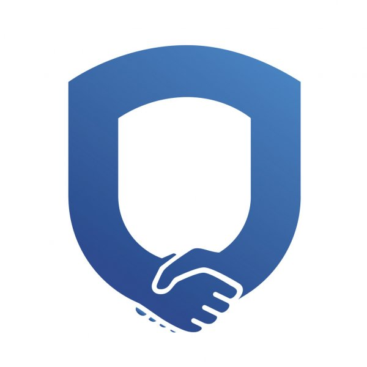

Можливість занурення в мовне середовище
10-річний досвід роботи

Задоволенні клієнти
НАШІ ПОСЛУГИ НА УЧАСТЬ В ПРОГРАМІ AU-PAIR:
Ввідне інформаційне консультування (інформація щодо прав, обов’язків та діяльності у
якості Au-Pair у
Німеччині).
Надання, перевірка, редагування та переклад необхідних документів для участі в програмі
Au-Pair.
Інформаційно- консультаційний супровід, впродовж всього терміну підготовки до участі в
програмі.
Підбір приймаючої сім'ї.
Налагодження та перевірка контактів із приймаючою стороною (Au-Pair-агенцією в країні
перебування та
приймаючою сім'єю).
Інформаційно- консультаційний супровід на етапі підготовки повного пакета документів від
сім’ї (контракт,
запрошення, страховка та ін.).
Підготовка документів необхідних на подачу для відкриття візи в консульстві (допомога в
заповненні візових
заяв, перевірка, редагування та переклад інших необхідних документів, а також за бажанням індивідуальна
підготовка до співбесіди в консульстві з викладачем німецької мови).
Допомога в організації поїздки до від’їзду з України.
Надання контактів інших учасників які беруть участь в програмі, або вже є в Німеччині
(за двосторонньої згоди).
Підтримка зі сторони агенції протягом всього часу перебування в Німеччині.
ПОСЛУГИ НАШИХ ПАРТНЕРІВ В НІМЕЧЧИНІ:
Агентство-партнер запрошує до себе сім‘ю для співбесіди, а також перевіряє житлові та
інші умови життя сім‘ї та надає дійові консультації з приймаючою сім’єю, яка бажає прийняти у себе Au-Pair
претендента та надає сім’ї інформацію щодо прав і обов’язків.
Агентство-партнер надає консультації Au-Pair претендентам, які стосуються їх перебування
у Німеччині. Консультації охоплюють допомогу в пошуку мовних курсів, регулярних культурних, суспільних та
консультативних заходів.
В проблемних ситуаціях агентство-партнер допомагає Au-Pair у труднощах з приймаючою
сім’єю та намагається допомогти у рішенні проблеми. Якщо проблема не вирішується, агентство-партнер допомагає
знайти Au-Pair претенденту іншу приймаючу сім’ю.
Агентство-партнер пропонує безкоштовні навчальні курси, такі як курси надання першої
медичної допомоги.
Au-Pair отримує номер гарячої лінії для екстрених випадків (!).